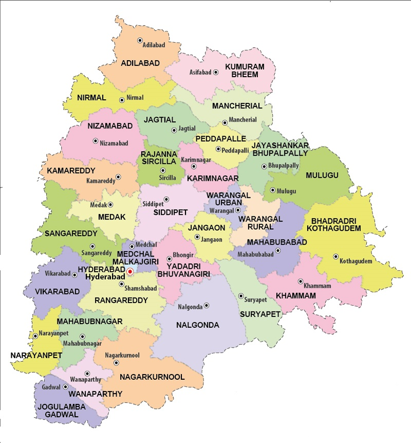

LET'S HAVE A LOOK AT THE TOUR MAP
BACK

WHERE TO VISIT , WHAT TO SEE?
SOME HOT PICKS(#HAVE_TO_VISIT)
- HYDERABAD - NEW YORK CITY OF SOUTH INDIA
- PAPIKONDALU - LAKE AMONGST HILLS AND VALLEYS
- BHADRACHALAM - HISTORIC EVENTS OF THE EPIC RAMAYANA
- ADILABAD - SOUND OF GURGLING WATERFALLS ,GENTLE COOL BREEZE
- NIZAMABAD - RICH HERITAGE SITE
- SECUNDERABAD - TWIN CITY OF HYDERABAD
- KANAKAI WATERFALLS
- GAYATRI WATERFALLS
- MALLELA THEERTHAM - BRIMMING WATERFALL SURROUNDED BY LUSHGREEN SCENERY
- MRUGAVANI NATIONAL PARK - FAMOUS FOR PEACOCKS
- NELAKONDAPALLI - CULTURAL, RELIGIOUS AND HISTORICAL EXPLORATION
- LAKNAVARAM CHERUVU
- MEDAK CATHEDRAL - CHURCH IN THE GOTHIC REVIVAL STYLE
SOME_OTHER_ATTRACTIONS
- NALGONDA - DEEP ROUTED RICH HISTORY AND CULTURE
- KHAMMAM - FORTS
- KARIMNAGAR - ISLAMIC ARCHITECTURE
- CHILKUR BALAJI TEMPLE
- KBR NATIONAL PARK
- KINNERASANI WILDLIFE SANCTUARY
- BOGATHA FALLS
- VEMULAWADA - NUMEROUS REMARKABLE TEMPLES
- MAHBUBNAGAR - FAMOUS FOR THE FORTS
- MEDAK FORT - ARCHITECTURAL MASTERPIECE OF BYGONE ERA.
- RACHAKONDA FORT
- KOTILINGA - HINDU PILGRIMAGE SITE